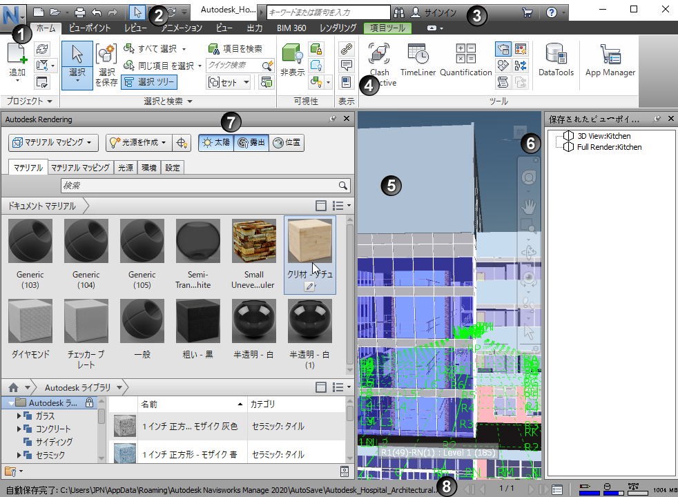
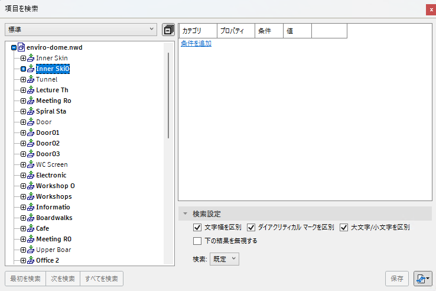
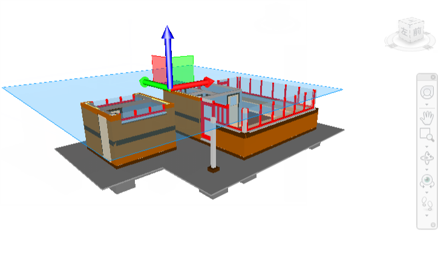
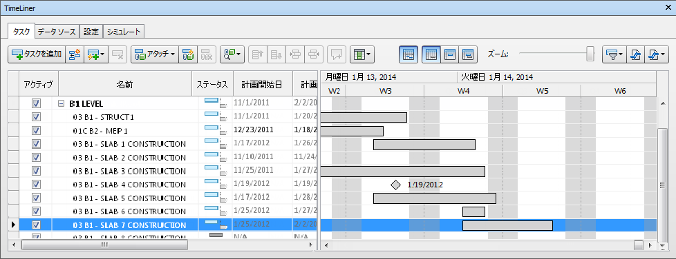
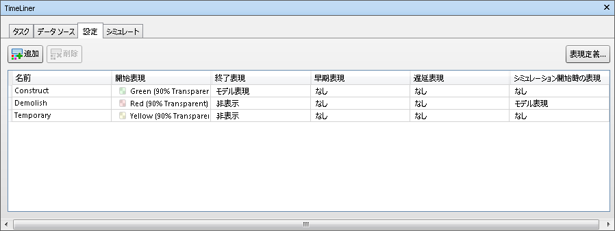
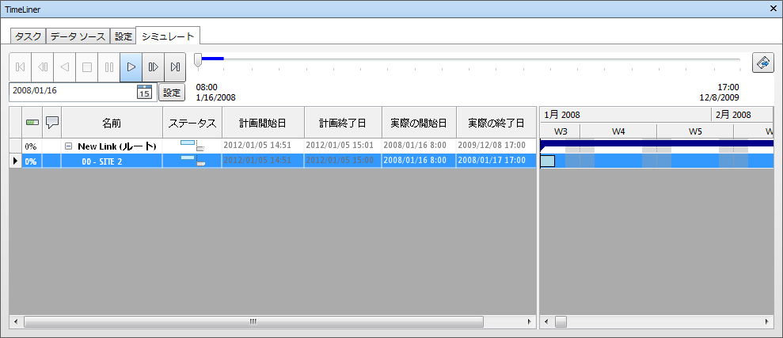
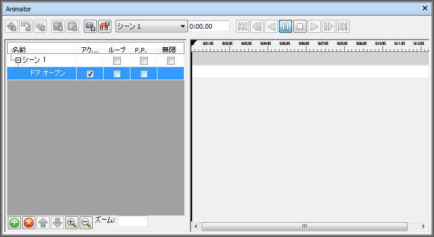
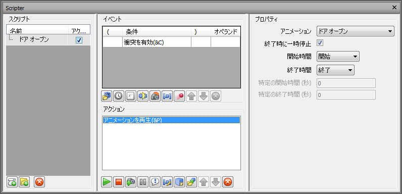
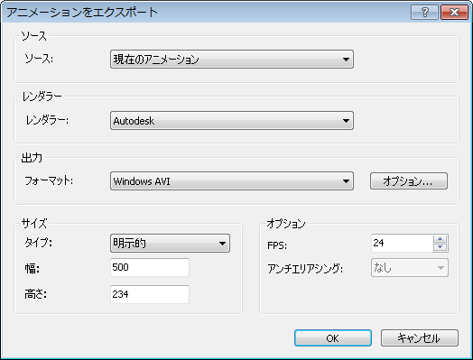
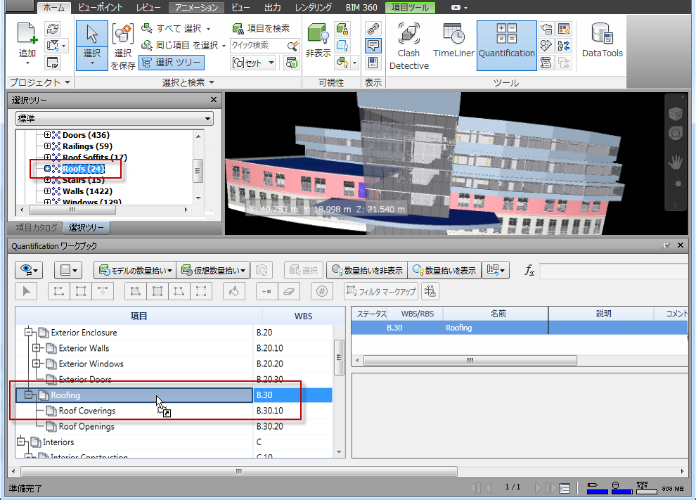

Navisworks Simulateの操作方法まとめ（2027版ヘルプ準拠）
要点まとめ
オートデスクの公式ヘルプ（Navisworks 2027・日本語版）をもとに、Navisworks Simulateの操作を作業の順にまとめました。メニュー名はヘルプの表記に合わせています。筆者は実機での操作確認をしていません。バージョンによって、ボタンの名前や位置が変わることがあります。
画面の画像は公式ヘルプに載っているもので、旧バージョンの画面も含みます。画像をタップすると大きく表示できます。
覚える順番は「画面とファイル → ナビゲーション → 選択とセット → ビューポイント → TimeLiner」がおすすめです。TimeLinerは、セットとビューポイントを使いこなせると作業が速くなるためです（筆者の提案）。
まず押さえる：Simulateでできること
Manageとの違いは「干渉チェック」だけ
Manageだけにあるのは干渉チェックと干渉管理[1]
価格（オートデスク公式ストア）
Simulateは年額¥196,900（税込）。Manageの約4割[2][3]
2027版 最新版の主な変更点
アイコン刷新、外観プロファイラの改善、新しいファイル形式など[11]
動作環境
対応OSはWindows 10／11（64ビット）[16]
- OS
- Windows 10／11（64ビット）[16]
- CPU
- 3.0GHz以上[16]
- メモリ
- 最低2GB[16]
- ディスク
- インストールに15GB以上の空き[16]
- 画面
- 1,280×800以上（1,920×1,080を推奨）[16]
画面とファイルの基本
画面は8つの部分でできている
上のリボンで操作し、中央のシーン ビューで見る[17]

リボンのタブ早見表
主要ツールは[ホーム] > [ツール]パネルにある[20][6][21]
| タブ | 主な中身 |
|---|---|
| ホーム | 追加・マージ・リフレッシュ、選択と検索、表示/非表示、ツール（TimeLiner・Quantification・外観プロファイラなど） |
| ビューポイント | ビューポイントの保存と再生、カメラ、ナビゲート（重力・衝突など）、断面化、画像の書き出し |
| レビュー | 測定、朱書き、タグ、コメント |
| アニメーション | Animator、ビューポイント アニメーションの記録、再生、Scripter、動画の書き出し |
| 表示 | ナビゲーション支援（ViewCubeなど）、グリッドとレベル、ウィンドウの表示切り替え |
| 出力 | 印刷、パブリッシュ、DWF・FBX・KMLなどへの書き出し、データの書き出し |
| レンダリング | Autodesk Renderingウィンドウ、レイ トレース |
| 項目ツール | 部材を選んだときだけ表示。色・透明度、移動・回転、注視点など |
ファイル形式は3つ（＋2027版のNWL）
モデルを集めて1つにする
人に渡すときはNWDを「パブリッシュ」
パブリッシュしたNWDにはパスワードや期限を付けられる[4]
アプリケーション ボタン > [パブリッシュ]を押し、[パブリッシュ]ダイアログでドキュメント情報と保護の設定をします。[4]
モデルの中を動く（ナビゲーション）
マウスのホイールだけで基本操作ができる
回すとズーム、押して画面移動、Shift＋押すで回転[29]
| したいこと | 操作 |
|---|---|
| 拡大・縮小 | ホイールを前後に回す |
| 画面移動 | ホイールを押したままマウスを動かす |
| 回転（オービット） | Shift＋ホイールを押したままマウスを動かす |
| 回転の中心を変える | Ctrl＋Shift＋ホイールを押したまま、中心にしたい位置へドラッグ |
ViewCubeとナビゲーション バー
ViewCubeの面をクリックすると、その方向から見える[31]
ウォークで歩く：衝突・重力・第三者
ウォークに衝突と重力を足すと、階段を上り下りできる[30]
| 機能 | 内容 | 切り替え |
|---|---|---|
| 衝突 | 自分に大きさを持たせ、壁などを通り抜けないようにする。体の高さの半分までの段差は越えられる | Ctrl+D（ウォーク・フライ中） |
| 重力 | 下に引っ張られ、床に沿って歩く。衝突がオンのときだけ使える | Ctrl+G（ウォーク中） |
| 第三者 | 自分を表すアバターを表示する | Ctrl+T |
ウォークはCtrl+2で切り替えられます。[32]
覚えておくと速いショートカット
ツールはCtrl＋数字、ウィンドウはCtrl＋Fキーで切り替え[32]
| キー | 内容 |
|---|---|
| Ctrl+1 | 選択 |
| Ctrl+2 | ウォーク |
| Ctrl+6 | 画面移動 |
| Ctrl+7 | オービット |
| Ctrl+9 | フライ |
| Ctrl+H | 選んだ項目を非表示 |
| Ctrl+F | クイック検索 |
| Esc | 選択をすべて解除 |
| Ctrl+F3 | TimeLinerウィンドウ |
| Ctrl+F5／F6 | Animator／Scripterウィンドウ |
| Ctrl+F8 | Quantificationワークブック |
| Ctrl+F11 | 保存されたビューポイント |
| Ctrl+F12 | 選択ツリー |
選ぶ・探す・見せ方を変える
選択は[選択ツリー]と[シーン ビュー]が連動する
同じものをまとめて選ぶ
[同じ項目を選択]で、同じ名前・タイプをまとめて選ぶ[39][40]
同一名を選択
選んだ部材と名前が同じものをすべて選ぶ
同一タイプを選択
タイプが同じものをすべて選ぶ
同じ（プロパティ）を選択
マテリアルなど、指定したプロパティが同じものを選ぶ
複数インスタンスを選択・選択を反転
同じ部材のコピーをすべて選ぶ／選択と非選択を入れ替える
場所は[ホーム]タブ > [選択と検索]パネル > [同じ項目を選択]です。[39]
文字で探す：クイック検索と[項目を検索]
名前の一部ならクイック検索、条件で絞るなら[項目を検索][41][42]

選択セットと検索セットを作る
検索セットは条件を保存するので、追加した部材も拾う[43]
隠す・色を変える
見たい部材だけ残すなら[選択されていない項目を非表示][48]
外観プロファイラで条件ごとに色分けする
プロパティやセットを条件に、色分けをまとめて設定[51]
- 1
[ホーム] > [ツール] > [外観プロファイラ]
- 2
プロファイルを追加して名前を付ける
- 3
[プロパティ別]タブで、カテゴリ・プロパティ・条件を選ぶ
- 4
色と透明度を選び、[テスト選択] → [追加]
必要な分だけ繰り返す。上から順に適用される[52]
- 5
[プロファイルを適用]
最初に全体を透明度80％の灰色にすると、色分けが目立ちます（ヘルプのヒント）。設定はXMLで保存して共有できます。[52][51]
レビュー：ビューポイント・断面・測定・朱書き
ビューポイントで「見せたい場所」を保存する
視点に朱書きやコメントを付けて保存できる[53]
[ビューポイント]タブ > [保存、ロード、再生]パネル > [ビューポイントを保存]を押し、[保存されたビューポイント]ウィンドウで名前を入力します。[54]
断面で切って中を見る

測定する
[レビュー] > [測定]から選び、部材の上をクリック[58][59]
| ツール | 測るもの |
|---|---|
| ポイントからポイント | 2点間の距離 |
| ポイントから複数ポイント | 1つの基点から複数の点までの距離 |
| ポイントライン | 経路に沿った合計の長さ |
| 累積 | 複数の2点間距離の合計 |
| 角度・面積 | 2本の線の角度、平面の面積 |
| シングル ポイント | 1点の座標 |
| 最短距離 | 選んだ2つの部材の間の最短距離 |
朱書き・タグ・コメントを残す
朱書きを描くと、ビューポイントが自動保存される[60]
TimeLinerで工程（4D）シミュレーション
TimeLinerは、工程表のタスクとモデルの部材を結び付け、日付に沿って建物ができていく様子を再生する機能です。計画と実績の比較や、費用の管理（5D）もできます。[9]
全体の流れ
タスク作成 → 部材を付ける → 再生 → 書き出し[6]
タスクの作り方は3通り
自動追加なら、部材がアタッチ済みで作られる[62]

タスクタイプで「現れ方」が決まる
[建設]は作業中緑、終わると通常の表示になる[64]

| タイプ | タスク開始時 | タスク終了時 |
|---|---|---|
| 建設 | 緑で表示 | モデル本来の表示 |
| 解体 | 赤で表示 | 非表示 |
| 仮設 | 黄で表示 | 非表示 |
部材をタスクにアタッチする
追加は[現在の選択を追加]で。通常のアタッチは上書き[68]
工程表を取り込む
再生する・設定を変える
[アクティブ]をオンにして、[シミュレート]タブで再生[63]

費用（5D）を入れる
4種類の費用を入れると、合計が[総費用]になる[76]
動画に書き出す
ソースに[TimeLiner シミュレーション]を選んで書き出す[77]
AnimatorとScripterで動きを付ける
Animatorの基本：シーン → セット → キーフレーム
時刻ごとに部材を動かし、キーフレームで記録する[79]

TimeLinerのタスクと連動させる
[タスク]タブの[アニメーション]列でシーンを選ぶ[86]
| 選択肢 | 動き |
|---|---|
| 尺度（既定） | アニメーションの長さをタスクの期間に合わせる |
| 開始を一致 | タスクの開始と同時に、記録した速さで始まる |
| 終了を一致 | タスクの終了時にちょうど終わる |
ビューポイント アニメーション（歩き回る動画）
[アニメーション] > [作成] > [記録]で動きを録る[88]
Scripterで操作に反応させる
イベント（きっかけ）とアクション（動作）を組み合わせる[90]

動画・画像の書き出し
[アニメーションをエクスポート]で、FPSは10〜15が目安[95][96]

| 項目 | 選択肢 |
|---|---|
| ソース | 現在のAnimatorシーン／TimeLinerシミュレーション／現在のアニメーション（ビューポイント） |
| レンダラー | ビューポート（速い・確認向き）／Autodesk（レンダリング品質） |
| 形式 | Windows AVI、またはJPEG・PNG・BMPの連番画像 |
| サイズ | 明示的（幅・高さを指定）／縦横比を使用／ビューを使用 |
| FPS | 多いほど滑らかだが、書き出しに時間がかかる |
数量拾い（Quantification）とレンダリング
最初にプロジェクトを設定する
最初に[プロジェクト セットアップ]で単位などを決める[21]
数量拾いの3つの方法
部材を項目にドラッグ＆ドロップすると数量が出る[97][39]

変更の確認とExcelへの書き出し
フォトリアルなレンダリング
マテリアル → 照明 → 露出 → レンダリングの順[100]
今回確認できなかった点
- 実機での動作（筆者はNavisworksを操作しておらず、手順はすべて公式ヘルプの記載による）
- TimeLinerが対応する工程表ソフトの最新バージョン（ヘルプの記載はMicrosoft Project 2007〜2013などのまま）
- [追加]と[マージ]のショートカットの実際の動作。2027版の一覧はCtrl+Shift+A・Ctrl+Shift+M（2025版はCtrl+A・Ctrl+M）だが、説明ページはCtrl+A・Ctrl+Mのまま（英語版も同じ）
出典（103件）
閲覧日はいずれも2026年11月4日。ヘルプはNavisworks 2027の日本語版
- Navisworks Manage と Navisworks Simulate の違い（オートデスク サポート）
- Navisworks の価格と購入（購入パネル）（オートデスク公式ストア）
- 特定商取引法に基づく表記（オートデスク ストア）
- ファイルを保存、名前変更、パブリッシュする（オートデスク（Navisworks 2027 ヘルプ））
- Autodesk Navisworks へようこそ（オートデスク（Navisworks 2027 ヘルプ））
- [TimeLiner]のワークフロー（オートデスク（Navisworks 2027 ヘルプ））
- オブジェクトをアニメーション化する（オートデスク（Navisworks 2027 ヘルプ））
- Quantification のワークフロー（オートデスク（Navisworks 2027 ヘルプ））
- TimeLiner ツールの概要（オートデスク（Navisworks 2027 ヘルプ））
- アニメーション シーンを再生する（オートデスク（Navisworks 2027 ヘルプ））
- Navisworks 2027 の新機能（オートデスク（Navisworks 2027 ヘルプ））
- ファイル形式とサポート（2027 の新機能）（オートデスク（Navisworks 2027 ヘルプ））
- ネイティブ ファイル形式（オートデスク（Navisworks 2027 ヘルプ））
- 他の改良点（2027 の新機能）（オートデスク（Navisworks 2027 ヘルプ））
- ユーザ インタフェースと操作性の改善（2027 の新機能）（オートデスク（Navisworks 2027 ヘルプ））
- 動作環境（オートデスク（Navisworks 2027 ヘルプ））
- Navisworks ユーザ インタフェース（オートデスク（Navisworks 2027 ヘルプ））
- ナビゲーション ツール（オートデスク（Navisworks 2027 ヘルプ））
- ドッキング可能ウィンドウのリファレンス（オートデスク（Navisworks 2027 ヘルプ））
- リボンのリファレンス（オートデスク（Navisworks 2027 ヘルプ））
- プロジェクトを作成する（Quantification）（オートデスク（Navisworks 2027 ヘルプ））
- ファイルを開く（オートデスク（Navisworks 2027 ヘルプ））
- 現在のシーンにジオメトリおよびメタデータを追加する（オートデスク（Navisworks 2027 ヘルプ））
- ファイルを作成する（オートデスク（Navisworks 2027 ヘルプ））
- ファイルをリフレッシュする（オートデスク（Navisworks 2027 ヘルプ））
- ファイルをマージする（オートデスク（Navisworks 2027 ヘルプ））
- 複数の設計ファイルを単一の Navisworks ファイルに追加する（オートデスク（Navisworks 2027 ヘルプ））
- NWD ファイルをエクスポートする（オートデスク（Navisworks 2027 ヘルプ））
- マウスのホイールを使用してナビゲートする（オートデスク（Navisworks 2027 ヘルプ））
- 製品固有のナビゲーション ツール（オートデスク（Navisworks 2027 ヘルプ））
- シーン内をナビゲートする（オートデスク（Navisworks 2027 ヘルプ））
- 既定のキーボード ショートカットのリファレンス（オートデスク（Navisworks 2027 ヘルプ））
- 選択ツール（オートデスク（Navisworks 2027 ヘルプ））
- 衝突（オートデスク（Navisworks 2027 ヘルプ））
- 重力（オートデスク（Navisworks 2027 ヘルプ））
- 第三者ビュー（オートデスク（Navisworks 2027 ヘルプ））
- 選択レベルを設定する（オートデスク（Navisworks 2027 ヘルプ））
- [選択ツリー]ウィンドウ（オートデスク（Navisworks 2027 ヘルプ））
- モデル数量拾いを実行する（オートデスク（Navisworks 2027 ヘルプ））
- 選択コマンドのリファレンス（オートデスク（Navisworks 2027 ヘルプ））
- クイック検索（オートデスク（Navisworks 2027 ヘルプ））
- [項目を検索]ウィンドウ（オートデスク（Navisworks 2027 ヘルプ））
- [セット]ウィンドウ（オートデスク（Navisworks 2027 ヘルプ））
- 選択セットを使用する（オートデスク（Navisworks 2027 ヘルプ））
- 検索セットを使用する（オートデスク（Navisworks 2027 ヘルプ））
- 選択セットと検索セットを作成し、管理する（オートデスク（Navisworks 2027 ヘルプ））
- ルールを使用してタスクをアタッチする（オートデスク（Navisworks 2027 ヘルプ））
- オブジェクトを非表示にする（オートデスク（Navisworks 2027 ヘルプ））
- オブジェクトの外観を変更する（オートデスク（Navisworks 2027 ヘルプ））
- オブジェクトを元の値にリセットする（オートデスク（Navisworks 2027 ヘルプ））
- 外観プロファイラ（オートデスク（Navisworks 2027 ヘルプ））
- モデルを色分けする（オートデスク（Navisworks 2027 ヘルプ））
- ビューポイントの概要（オートデスク（Navisworks 2027 ヘルプ））
- ビューポイントを保存、共有する（オートデスク（Navisworks 2027 ヘルプ））
- 断面を有効にして使用する（オートデスク（Navisworks 2027 ヘルプ））
- 断面ボックスを使用して 3D モデルを初めて断面化する（オートデスク（Navisworks 2027 ヘルプ））
- 平面を使用して 3D モデルを初めて断面化する（オートデスク（Navisworks 2027 ヘルプ））
- 測定ツールのリファレンス（オートデスク（Navisworks 2027 ヘルプ））
- 測定する（オートデスク（Navisworks 2027 ヘルプ））
- [朱書きツール]パネル（オートデスク（Navisworks 2027 ヘルプ））
- コメント、朱書き、タグを使用する（オートデスク（Navisworks 2027 ヘルプ））
- タスクを作成する（オートデスク（Navisworks 2027 ヘルプ））
- シミュレーションを再生する（オートデスク（Navisworks 2027 ヘルプ））
- [設定]タブ（TimeLiner）（オートデスク（Navisworks 2027 ヘルプ））
- 外部プロジェクト スケジュールからデータを読み込む（オートデスク（Navisworks 2027 ヘルプ））
- タスク タイプを設定または変更する（オートデスク（Navisworks 2027 ヘルプ））
- シミュレーションの表現（オートデスク（Navisworks 2027 ヘルプ））
- タスクを手動でアタッチする（オートデスク（Navisworks 2027 ヘルプ））
- プロジェクト スケジュールを検証する（オートデスク（Navisworks 2027 ヘルプ））
- [データ ソース]タブ（オートデスク（Navisworks 2027 ヘルプ））
- サポートされるスケジューリング ソフトウェア（オートデスク（Navisworks 2027 ヘルプ））
- CSV サポート（オートデスク（Navisworks 2027 ヘルプ））
- タスクとプロジェクトの変更内容を同期する（オートデスク（Navisworks 2027 ヘルプ））
- [シミュレーションの設定]ダイアログ ボックス（オートデスク（Navisworks 2027 ヘルプ））
- ガント チャートを使用する（オートデスク（Navisworks 2027 ヘルプ））
- TimeLiner 費用管理（オートデスク（Navisworks 2027 ヘルプ））
- イメージとアニメーションを TimeLiner からエクスポートする（オートデスク（Navisworks 2027 ヘルプ））
- 時間ベースのクラッシュに対して TimeLiner を使用する（オートデスク（Navisworks 2027 ヘルプ））
- キーフレームをキャプチャする（オートデスク（Navisworks 2027 ヘルプ））
- アニメーション シーンを追加する（オートデスク（Navisworks 2027 ヘルプ））
- 現在の選択に基づいてアニメーション セットを追加する（オートデスク（Navisworks 2027 ヘルプ））
- [Animator]ツールバー（オートデスク（Navisworks 2027 ヘルプ））
- [Animator]ウィンドウでシーンを再生する（オートデスク（Navisworks 2027 ヘルプ））
- オブジェクト アニメーションを作成する（オートデスク（Navisworks 2027 ヘルプ））
- キーフレームを編集する（オートデスク（Navisworks 2027 ヘルプ））
- タスクにアニメーションを追加する（オートデスク（Navisworks 2027 ヘルプ））
- タスクにスクリプトを追加する（オートデスク（Navisworks 2027 ヘルプ））
- ビューポイント アニメーションをリアルタイムで作成する（オートデスク（Navisworks 2027 ヘルプ））
- アニメーションを 1 フレームずつ作成する（オートデスク（Navisworks 2027 ヘルプ））
- アニメーション スクリプトを使用する（オートデスク（Navisworks 2027 ヘルプ））
- イベントを使用する（オートデスク（Navisworks 2027 ヘルプ））
- アクションを使用する（オートデスク（Navisworks 2027 ヘルプ））
- スクリプトを追加する（オートデスク（Navisworks 2027 ヘルプ））
- スクリプトを有効にする（オートデスク（Navisworks 2027 ヘルプ））
- イメージとアニメーションのエクスポート（オートデスク（Navisworks 2027 ヘルプ））
- [アニメーションをエクスポート]ダイアログ ボックス（オートデスク（Navisworks 2027 ヘルプ））
- 数量拾いの方法（オートデスク（Navisworks 2027 ヘルプ））
- 変更を解析する（オートデスク（Navisworks 2027 ヘルプ））
- データをエクスポートする（Quantification）（オートデスク（Navisworks 2027 ヘルプ））
- フォトリアリスティック レンダリング ワークフロー（オートデスク（Navisworks 2027 ヘルプ））
- Set or Modify the Task Type（2027）（オートデスク（Navisworks ヘルプ・英語版））（閲覧日 2026年11月5日）
- Reference for the Default Keyboard Shortcuts（2027）（オートデスク（Navisworks ヘルプ・英語版））（閲覧日 2026年11月5日）
- Reference for the Default Keyboard Shortcuts（2025）（オートデスク（Navisworks ヘルプ・英語版））（閲覧日 2026年11月5日）
写真・画像の出典（10件）
- Navisworksの画面全体
画像: Autodesk Navisworks 2027 ヘルプ「Navisworks ユーザ インタフェース」より © Autodesk, Inc.（CC BY-NC-SA 3.0） - [項目を検索]ウィンドウ
画像: Autodesk Navisworks 2027 ヘルプ「[項目を検索]ウィンドウ」より © Autodesk, Inc.（CC BY-NC-SA 3.0） - 水色の面が断面
画像: Autodesk Navisworks 2027 ヘルプ「平面を使用して 3D モデルを初めて断面化する」より © Autodesk, Inc.（CC BY-NC-SA 3.0） - [タスク]タブ
画像: Autodesk Navisworks 2027 ヘルプ「[タスク]タブ」より © Autodesk, Inc.（CC BY-NC-SA 3.0） - [設定]タブ
画像: Autodesk Navisworks 2027 ヘルプ「[設定]タブ（TimeLiner）」より © Autodesk, Inc.（CC BY-NC-SA 3.0） - [シミュレート]タブ
画像: Autodesk Navisworks 2027 ヘルプ「[シミュレート]タブ」より © Autodesk, Inc.（CC BY-NC-SA 3.0） - [Animator]ウィンドウ
画像: Autodesk Navisworks 2027 ヘルプ「[Animator]ウィンドウの参照」より © Autodesk, Inc.（CC BY-NC-SA 3.0） - [Scripter]ウィンドウ
画像: Autodesk Navisworks 2027 ヘルプ「[Scripter]ウィンドウの参照」より © Autodesk, Inc.（CC BY-NC-SA 3.0） - [アニメーションをエクスポート]ダイアログ
画像: Autodesk Navisworks 2027 ヘルプ「イメージとアニメーションのエクスポート」より © Autodesk, Inc.（CC BY-NC-SA 3.0） - 選択ツリーの「Roofs」を、ワークブックの項目「Roofing」にドラッグ＆ドロップしているところ
画像: Autodesk Navisworks 2027 ヘルプ「数量拾いの方法」より © Autodesk, Inc.（CC BY-NC-SA 3.0）